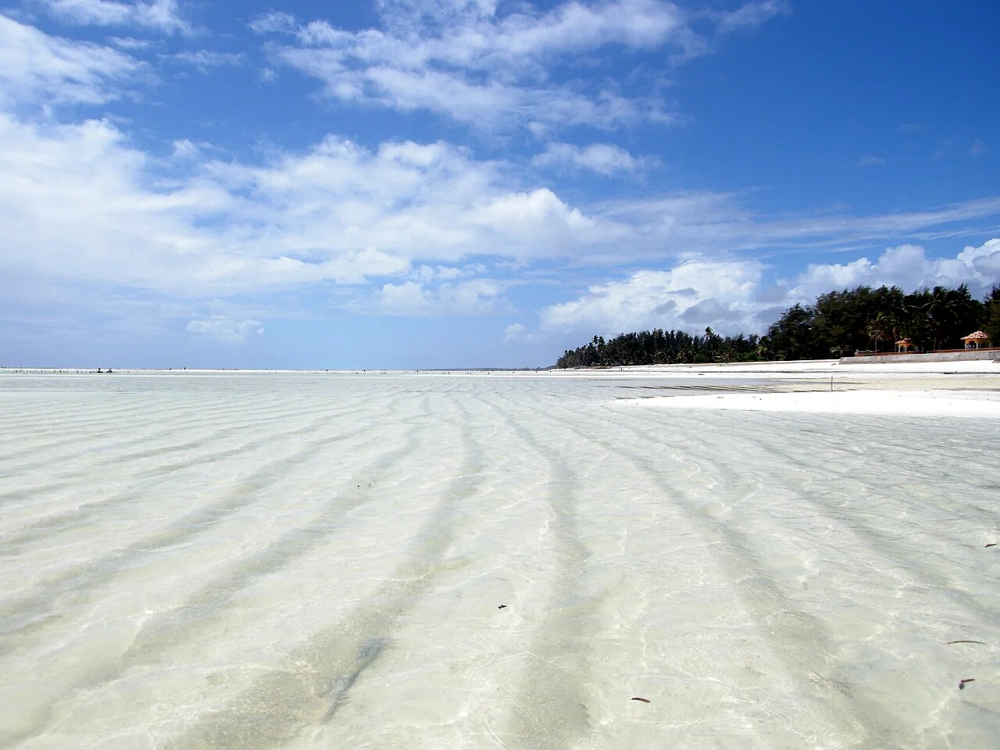

Paje
Zanzibar, Tanzanie · kitesurf

Sur la côte est de Zanzibar, la plage de Paje accueille de nombreuses écoles de kitesurf. Le plan d’eau change avec la marée : fixe ton créneau avec l’école avant d’arriver.
- Lieu
- Zanzibar, Tanzanie
- Niveau
- Variable selon les conditions
- Activités
- kitesurf
- Type d'eau
- Mer / océan
- Coordonnées
- -6.27, 39.53 (position approximative du secteur)
Ouvrir dans Ocean Buddy Télécharger sur l'App Store
Source : Paje Kitesurf.